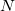
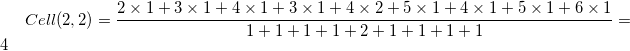

Die X-Funktion filter2 wendet eine Quadratfiltermatrix auf eine Quellmatrix an. Die Filtermatrix wird über jeder Zelle der Quellmatrix zentriert wird.
Zugriff auf diese Funktion über die Bedienoberfläche:
| Neu berechnen |
Bedienelemente zur Neuberechnung der Analyseergebnisse
Weitere Informationen finden Sie unter Analyseergebnisse neu berechnen. |
|---|---|
| Eingabematrix |
Das Eingabematrixobjekt Hilfe zum Festlegen von Bereichen finden Sie hier: Eingabedaten festlegen |
| Filtermatrix |
Das Filtermatrixobjekt |
| Auffülloptionen |
Die Filtermatrix kann außerhalb der Quellmatrix an den Rändern liegen. Wählen Sie eine Auffüllungsmethode (siehe Algorithmus unten).
|
| Normieren |
Wenn diese Option ausgewählt ist, wird der Ersatzwert mit dem Filtergewicht normiert. |
| Ausgabematrix |
Das Ausgabematrixobjekt Hilfe zum Festlegen der Bereiche finden Sie unter: Ergebnisse ausgeben |
Diese Funktion verwendet eine  mal Filtermatrix und positioniert sie in der Mitte über jeder Zelle der Quellmatrix. Für jedes Zelle des Filters berechnet sie das Produkt des Filterelements mit der überlagerten Zelle der ursprünglichen Matrix, summiert alle Produkte, normiert auf das Gewicht des Filters (wenn diese Option festgelegt wurde) und ersetzt dann die Pixel in dem ursprünglichen Bild mit dem neu berechneten Wert.
Zum Beispiel:
Der Wert der Zelle (2,2) in der Ausgabematrix ist:

Wenn das Kontrollkästchen Normieren aktiviert ist, werden die Produkte der überlagerten Zellen mit dem Gewicht der entsprechenden Zelle des Filters normiert.
Beim Anwenden eines Filters auf den Rand der Quellmatrix liegt ein Teil des Filters vielleicht außerhalb der Grenze der Quellmatrix. Sollte dies der Fall sein, kann der Anwender den Bereich außerhalb der Quellmatrix mit Nullen auffüllen (Auffüllen mit Nullen), durch Reflektion auffüllen (Auffüllen durch Spiegelung) oder durch wiederholte Kantenwerte auffüllen (Auffüllen mit Kantenwerten).